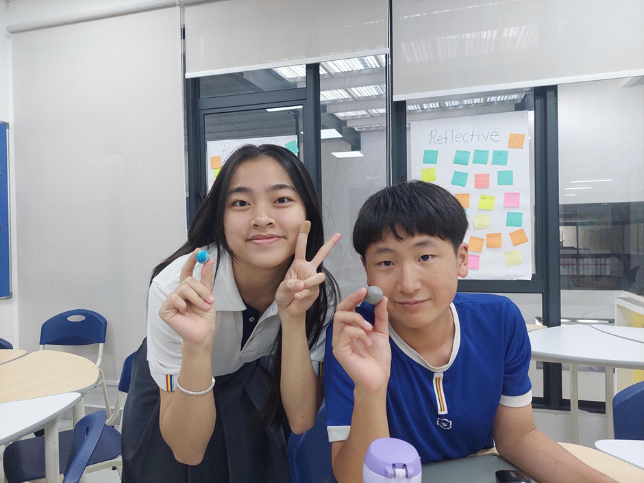
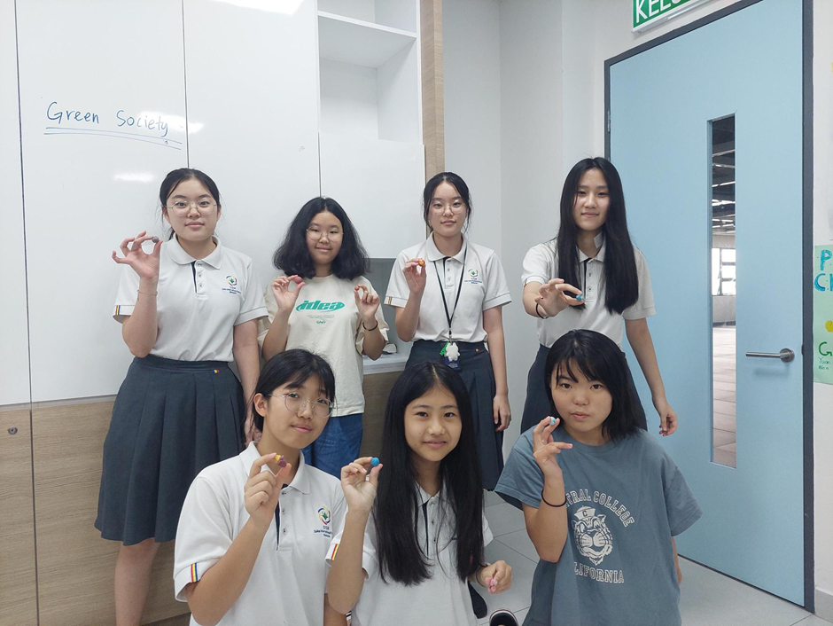
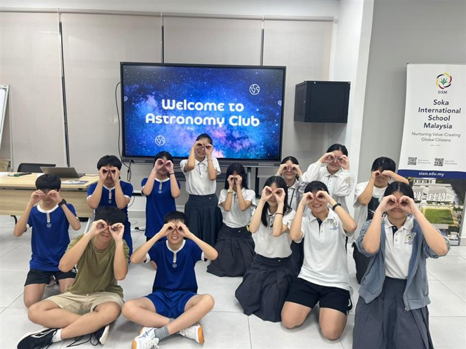

Get to know Astronomy Club
Astronomy Club is an activity where students learn about astronomy and space science through discussion, research, and
collaborative activities.
The objective is to deepen student's understanding of the universe, encourage curiosity, and develop interest in science
beyond the classroom.
Activity Day, Time, Venue & Advisor
Day: Wednesday
Time: 4:30 PM - 5:30 PM
Venue: Class C205 - C206
Advisor: Teacher Noriko
What does students do?
Students plan and lead activities such as short presentations, group discussions, quizzes, hands-on activities, and practical observations of celestial objects using telescopes
Suitable Students & Why You Should Join
Suitable for students who are interested in space, science, and sharing ideas with others.
Students should join to develop leadership skills, teamwork, and communication skills while learning about astronomy in
an enjoyable way.
What skills will you gain?
- Basic astronomy knowledge
- Leadership and presentation skills
- Critical thinking and teamwork
Activities we do
1. "Snap the Moon" Photography
Students capture images of the Moon using their own mobile devices. The photos will be shared with the class, and students will engage in a guided discussion to analyze lunar features and compare observations.
2. Oreo Moon Phases Activity
Students use Oreo cookies to model the phases of the Moon and demonstrate their understanding of the lunar cycle.
3. Solar System Relay Race
Students participate in a team-based relay activity to learn the order and key facts about the planets in the Solar System.
4. Clay Planet Modeling
Students create 3D models of planets using clay to understand differences in size, color, and characteristics.
5. Telescope Observation
Students observe celestial objects (e.g., the Moon and visible planets) using telescopes.
They identify surface features and record their observations.
Photos of previous activities and achievements


